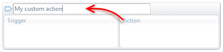
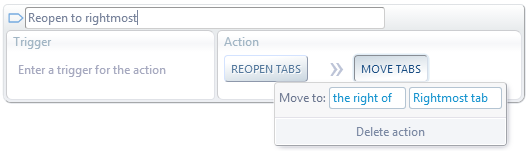

ACtl.execAction
Executes either a preset action or a custom action defined in the user configuration page.

ACtl.execAction(actionName[,targetTabs]) actionName Type: string | RegExp
The name of either a preset action or a custom action.
Preset action: One of the preset names starting with a # character (see remarks below).
These names are case-sensitive.
Custom action: If the name doesn't match any preset action, it must match a custom action defined by the user
(ignoring letter case and redundant white spaces).
If multiple actions match, all of them are executed from top to bottom.
If a regular expression is passed, all custom actions matching the expression will be executed.
targetTabs Type: TabSpec Default: undefined
One or more tabs to apply the action to. It can be either a tab ID, a filter object, a tab-selection name or an array combining all that. Full details at Tab Specifier.
If omitted, the default will be as follows:
| For preset actions: | The tab the script is running in or the #currentTab in background scripts.
|
| For custom actions: | The target tabs of the action, specified in the Apply to select box.
|
Returns Type: Promise Resolves to: Array
Returns immediately. The Promise will resolve with an array of tab IDs.
These are the tabs the action was applied to or the tabs the action created.
Throws Type: string
Error description if actionName doesn't match any action or if targetTabs is not a valid Tab Specifier.
Remarks
The following list shows the supported preset action names and their equivalent AutoControl action in the GUI.
| #goBackTabs | Go back
|
| #goForwardTabs | Go forward
|
| #reloadTabs | Reload tabs
|
| #unloadTabs | Unload tabs
|
| #goUpURL | Go upper URL
|
| #openInIncognito | Open in incognito
|
| #zoomIn | Zoom in
|
| #zoomOut | Zoom out
|
| #duplicateTabs | Duplicate tabs
|
| #detachTabs | Detach tabs
|
| #reopen | Reopen closed tab
|
| #sendWinsToBottom | Send to bottom
|
| #clpbrdCut | Clipbrd cut
|
| #clpbrdCopy | Clipbrd copy
|
| #clpbrdPaste | Clipbrd paste
|
| #copyLinks | Copy links
|
| #extractURLs | Extract URLs
|
| #delDupLines | Erase dup. lines
|
Actions that are not in this list can be performed by other ACtl functions. See GUI vs API for more details.
Examples
Go back on all tabs in the current window.
ACtl.execAction('#goBackTabs', '#currWinTabs') ;
Duplicate the current tab and then pin the duplicate.
let [newTabId] = await ACtl.execAction('#duplicateTabs', '#currentTab') ;
ACtl.setTabState(newTabId, 'pinned') ;
Trigger a custom action to reopen the last closed tab and move it to the rightmost position in the window.
let [newTabId] = await ACtl.execAction('Reopen to rightmost') ;
Reopen to rightmost must be an action defined in the user configuration page, like this:

 Forum
Install now from theChrome Web Store
Forum
Install now from theChrome Web Store